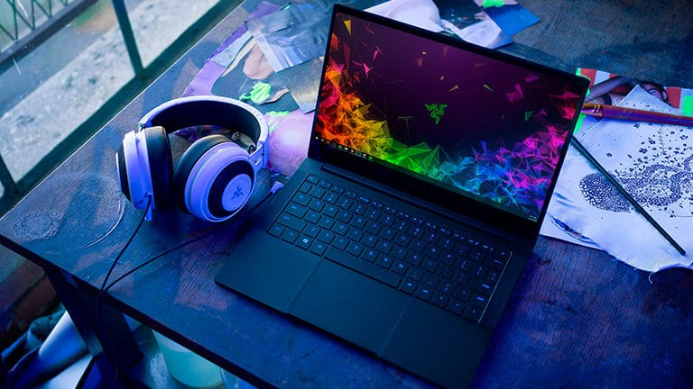

Наші ноутбуки
Перші портативні комп'ютерні пристрої для бізнесу з'явилися в 90-х роках ХХ століття.
Біля витоків поставок лептопів в Україні впевнено стояла наша компанія ДКТ. І до сьогодні ідея
реалізації мобільного офісу активно просувається нашими фахівцями. Для зручності клієнтів крім
салону ноутбуків в центрі Києва було відкрито також інтернет-магазин ноутбуків.
Індивідуальний підхід
У нашому онлайн каталозі представлена сучасна комп'ютерна техніка для вирішення різних бізнес
завдань:
- високопродуктивні ноутбуки для проектних бюро, серверних парків;
- стандартні універсальні пристрої в класичному дизайні з екраном 12-16" для офісної роботи,
відтворення мультимедіа;
- ультрабуки в компактному, тонкому корпусі для частих відряджень, мобільних користувачів, які
завжди хочуть мати електронного помічника під рукою;
- Tablet PC - планшетні трансформери. Статусні ультрасучасні гаджети з поворотним сенсорним
екраном і зручною клавіатурою. Поєднують завдання звичайного лептопа і планшета.
Наш інтернет-магазин комп'ютерної техніки стане вашим надійним партнером в пошуку оригінальних комплектуючих до облаштування сучасного ІТ-парку великого офісу або невеликої дизайн-студії. Ми підберемо обладнання під ваш рід діяльності, відведений бюджет і заявлені вимоги продуктивності системи.
